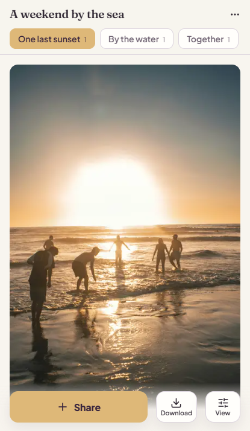
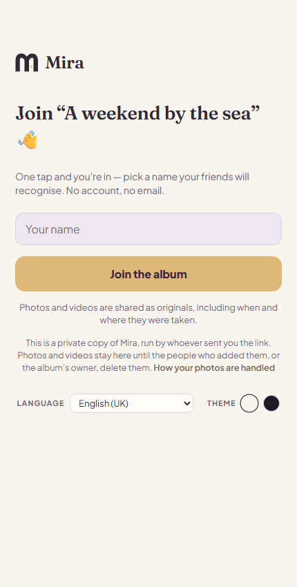
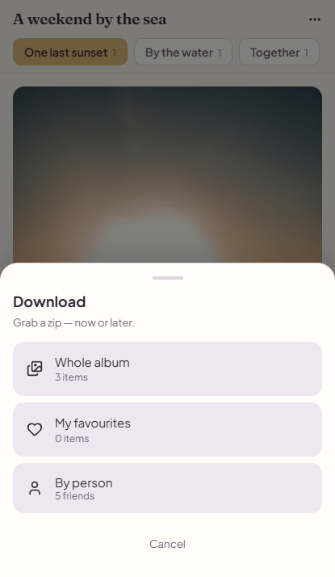

Make a place for them.
Sign in and create an album for your trip, dinner, or weekend away. Give it a name everyone will recognise.
EVERYONE’S PHOTOS. ONE SHARED ALBUM.
One link, everyone’s photos and videos at full quality, and nobody has to make an account.
Group chats shrink your photos and scatter them. Mira is a shared album you run on your own server: guests scan a code, type a name, and add or download everything as it was taken. Large videos play at once from a small copy, while the original stays there to download.
See how it worksOpen source. Hosted by you.
No guest accounts or app installation required.

SOUND FAMILIAR?
Some are on your phone. Some are buried in the group chat. The best one is still on a friend’s camera roll.
Mira gives everyone one place to add their photos and videos, so the story of your time together can come together, too.
FROM EVERY PHONE TO ONE ALBUM
Sign in and create an album for your trip, dinner, or weekend away. Give it a name everyone will recognise.
Share an invitation link or QR code. Guests join in their browser and add photos and videos without creating an account.
Browse the album, mark your favourites, and download the whole collection or just the moments you want to keep.


MORE THAN A PILE OF PHOTOS
Group contributions into moments: the walk, the lunch, the sunset. Find your favourites when you come back to the album.
Download by person, pick a few photos, or save the whole album as a ZIP. Every photo comes back byte for byte as it was uploaded, with its date and place and its own file name.
Videos are kept as uploaded too. The album plays a small copy so a one-gigabyte clip starts at once; When you download, you choose: the original, or the small copy if you are in a hurry. The album shows both sizes.
An owner who is short of disk space can choose to keep only the small copies. The album then says so, to the owner and to every guest, before anyone adds a video.
WHERE THE PHOTOS USUALLY END UP
Only what we could check on each maker’s own pages or in named reports, on 11 October 2026. An empty cell means we could not confirm it either way, not that the answer is no.
| Mira | Group chat | iCloud Shared Album | Google Photos album | Immich public link | |
|---|---|---|---|---|---|
| Photos and videos at full quality | Yes. Untouched originals; videos also play from a small copy. | Reduced. WhatsApp’s “HD” video is reported to be 720p.1 | Full resolution, from iOS 27.2 | — | — |
| Guests add photos without an account | Yes. Open the link, type a name. | Everyone needs the chat app. | On the web, from iOS 27.2 | Anyone with the link can view and add; whether they need a Google account is not stated.3 | Yes, if the owner turns on uploads for the link.4 |
| Guests appear by name, in an album of their own | Yes. | — | — | — | No. Uploads land in the owner’s library.4 |
| Download one person’s photos, or your favourites | Yes, as a ZIP: by person, favourites, a selection or everything. | No. | — | — | Not from a public link.4 |
| What you need to start | A server you run. | Nothing. Everyone already has it. | One person on iOS 27.2 | A Google Photos album; it counts against a storage quota.3 | A server you run. |
If your group already lives in one of these and is happy, stay there. Mira is for the weekend when someone asks for “the real photos”, and for people who would rather the album lived on a server they run.
OPEN SOURCE. SELF-HOSTED.
Mira runs on your own server, with your own storage. You choose where the album lives and look after the photos and videos people entrust to it.
Host your own MiraRun Mira with Docker, a database, and media storage. You manage hosting, updates, and backups.
Owners sign in to create and manage albums. Guests use an invitation link, with access remembered on their device.
Let contributions appear immediately, or review uploads before they become visible to the group.
A FEW PRACTICAL THINGS
Only album owners need to sign in. Guests can join through an invitation link or QR code without an account. Their guest access is tied to their browser and device.
No. Mira works in the browser. It can also be installed as a progressive web app on supported devices.
Anyone with its invitation link can join, including someone the link is forwarded to. Share invitations with the people you want in the album. Upload approval controls which contributions appear; it is not approval of who joins.
Immich is a full photo library, and a good one. Its public links can let people without an account upload, with a password and an expiry date. But what they send lands in the owner’s library, nobody joins by name, and a public link cannot download one person’s photos or a guest’s favourites. Mira is only the shared album: guests have names, see each other’s photos and videos, and take home what they want. If you already run Immich, Mira sits beside it for the events; it does not replace your library.
The uploaded video is kept untouched, and the server makes a small copy for watching in the album, so a large clip starts playing at once. Download and every ZIP give the original. An owner can instead choose to keep only the small copies to save disk space; that album then tells everyone so.
Mira is software you host yourself. This website introduces the project; it does not store albums. The setup guide explains what you need to run your own instance.
FOR THE NEXT “WE SHOULD DO THIS AGAIN.”